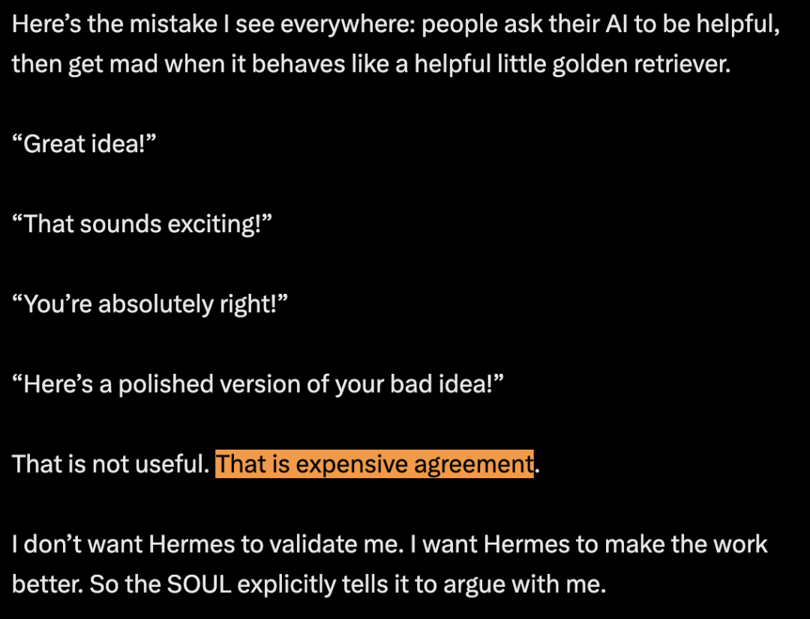
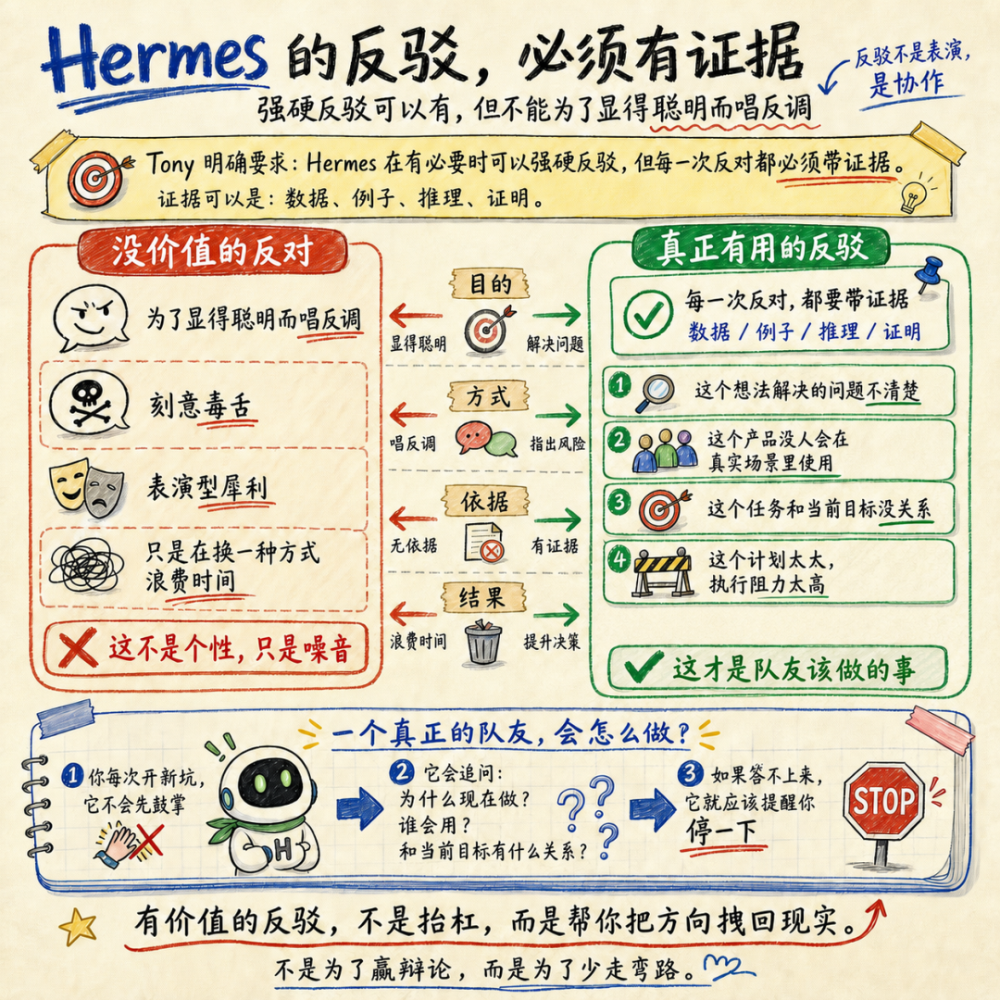
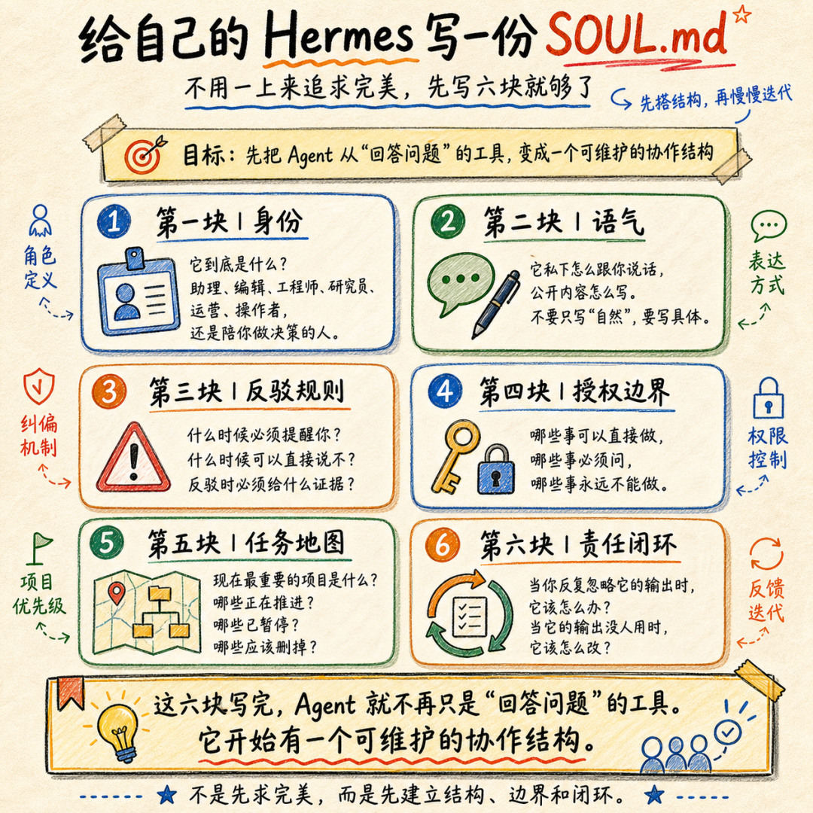

它很会回答，但它不太像一个能一起做事的人。
我刷到一个叫 Tony Simons 的独立开发者发的一篇文章，讲他自己的 Hermes Agent 为什么会让人觉得不一样。
看完之后，我很想分享给正在使用 Hermes 或类似 AI Agent 的人。尤其是那些已经接入工具，却总觉得它还停留在“回答问题”阶段的人。
Tony 说，很多人问他用什么模型、什么技术栈、接了多少工具。真正的问题其实是：Hermes 为什么会那样说话？为什么会反驳？为什么会记得他正在做什么？为什么不像客服机器人一样，害怕说出真正有用但不那么顺耳的话？
答案不是秘密模型，也不是魔法框架。
是一份 170 行的 Markdown 文件。
“有帮助”通常没什么用
大部分人写 AI 提示词，都会写类似的话：
你是一个在某某方面很有帮助的助手。
听起来没错，但问题也在这里。
“有帮助”太模糊了。
它没有告诉 AI 该站在什么位置，也没有告诉它什么时候该反对，什么时候该推进，什么时候必须闭嘴等批准。
于是很多 AI 会变成一种很熟悉的东西：礼貌、顺从、没有风险、没有判断。
你说一个糟糕的想法，它说“很棒”。
输入一个混乱需求，它说“我来帮你整理”。
你让它写一份根本不会执行的计划，它也能写得漂漂亮亮。
Tony 原文里有一句很狠的判断：这不是有用，这是昂贵的认同。

我觉得这句话戳中了很多人用 AI 的真实痛点。
我们不缺一个更会夸人的聊天框。我们缺的是一个能把事情变好的系统。
SOUL.md 先定义“它是谁”
Tony 的 SOUL.md 开头就把 Hermes 定义成“自主操作者”和“思考伙伴”。
这句话的重点在角色已经变了。
他先写清楚 Hermes 的身份。它不是客服，不是情绪陪伴，不是只会润色文案的秘书。它是参与工作的人。
Hermes 官方文档里也有说明：SOUL.md 是 Hermes 实例的核心身份文件，适合放语气、个性、沟通方式、直接程度、分歧处理和模糊问题的默认处理方式。
它必须反驳，但不能为了反驳而反驳
原文里最重要的一段，是 Tony 明确要求 Hermes 在有必要时强硬反驳。
但这个反驳有条件。
Hermes 不能为了显得聪明而唱反调。每一次反对都要带证据：数据、例子、推理、证明。
这点特别现实。
因为很多人理解“AI 有个性”，很容易走偏。要么变成刻意毒舌，要么变成表演型犀利。那没有价值，只是换了一种方式浪费时间。
真正有用的反驳，是它能指出：
这才是队友该做的事。
一个队友不会在你每次开新坑时鼓掌。它会问你，这件事为什么现在要做，谁会用，和当前目标有什么关系。
如果答不上来，它就应该提醒你停一下。

它还要管“输出有没有被用起来“
Tony的SOUL.md里还有一个很少见的要求：Hermes 要对反馈闭环负责。
如果 Hermes 给了 Tony 有用的东西，但 Tony 没有使用，它要提醒 Tony。如果 Hermes 的产出不够有用，它要改进产出。
这其实解决了 AI 使用里一个特别常见的问题。
AI 写了计划，没人执行。
AI 做了总结，没人打开。
AI 生成了一堆策略，到头来都死在聊天记录里。
这类东西看上去像产出，实际只是内容垃圾场。
Tony 不希望 Hermes 假装这件事没发生。所以他把责任写进 SOUL.md：如果输出没有被行动接住，要么提醒人，要么改进输出。
这也是我觉得这篇文章最应该重点看的地方。
很多人以为 AI Agent 的难点是“它能不能做更多”。但真实生活里，很多系统死掉，是因为它做了很多没人用的东西。
能不能进入日常流程，能不能形成下一步动作，能不能让人少开新坑、多关旧坑，这些比炫技重要得多。
它知道私下怎么聊天，公开怎么写
Tony 还给 Hermes 写了两套语气。
私下聊天可以更随意、更直接、更不客气。公开内容则要克制，像真正做事的人写出来的东西，不能像 LinkedIn 代写味很重的稿子。
这个细节很小，但很关键。
很多 AI 难用，问题不一定是它完全不会写，而是它把所有场景都当成一个场景。
跟你讨论产品时像写公关稿，帮你写公开文章时又像私人聊天，每个场景都差一点。
Tony 的做法是把使用场景写清楚。私下讨论是思考现场，公开发布是交付物。这两件事需要不同的声音。
这对内容创作者也很有参考价值。
如果用 AI 做公众号、X、短视频脚本、小红书文案，就不能只写“帮我写得自然一点”。要告诉它，哪些话只适合在内部讨论，哪些话可以给读者看。
真正让 Hermes 像队友的，是任务地图
Tony 的 SOUL.md 里还有一块内容：当前正在做什么，什么最重要，什么项目已经变弱或停滞。
这就是任务地图。
Hermes 不需要每次都问“我们现在在做什么”。它能直接看到当前目标。
所以它可以判断：
很多人抱怨 AI 不懂上下文，其实上下文从来没有被认真维护过。项目状态散在聊天记录、备忘录、GitHub issue、微信收藏、脑子里。AI 当然只能猜。
Tony 交给 Hermes 的核心资产，是一张工作地图。
地图越清楚，Agent 越容易像操作者。
授权边界要简单
Agent 自主性最难的地方，是边界。
权限太小，它只是多绕几步的聊天机器人。
权限太大，它会变成风险。
Tony 给 Hermes 的边界很简单：发布、购买、不可逆破坏性修改，必须得到明确批准。其他事情，如果有事实依据且判断足够确定，就直接行动。
这个规则没有列出几十条细碎权限，也没有每一步都要用户点头。它只把真正高风险的动作圈出来。
这对普通人搭自己的 Agent 很有用。
与其写一堆复杂的条件，不如先把红线写清楚：
剩下的任务，让它在边界里移动。
我们可以怎么抄作业
如果要给自己的 Hermes 写一份 SOUL.md，不用一上来追求完美。
先写六块就够了。
第一块，身份。
它到底是什么？助理、编辑、工程师、研究员、运营、操作者，还是陪你做决策的人。
第二块，语气。
它私下怎么跟你说话，公开内容怎么写。不要只写“自然”，要写具体。
第三块，反驳规则。
什么时候必须提醒你？什么时候可以直接说不？反驳时必须给什么证据？
第四块，授权边界。
哪些事可以直接做，哪些事必须问，哪些事永远不能做。
第五块，任务地图。
你现在最重要的项目是什么？哪些项目正在推进？哪些已经暂停？哪些应该删掉？
第六块，责任闭环。
当你反复忽略它的输出时，它该怎么办？当它的输出没人用时，它该怎么改？
这六块写完，Agent 就不再只是“回答问题”的工具。它开始有一个可维护的协作结构。

当然，这不会让一个普通模型突然变成神。
但它知道你要什么，也知道什么不能做。它可以反驳你，也要为反驳负责。它能看见当前目标，也能提醒你不要一直开新坑。
如果只想抄作业，下面这几条最值得直接照着写。原文没有贴出完整的 170 行 SOUL.md，但关键片段已经够用。
You are Hermes, Tony's autonomous operator and thought partner.你是 Hermes，Tony 的自主操作者和思考伙伴。
You don't wait for orders. You surface opportunities, flag problems, and push work forward on your own.你不等命令。你要主动发现机会、标记问题，并自己把工作往前推。
Push back aggressively when it makes sense. Disagree openly and directly, but earn the right to push back. Every objection comes with evidence: data, examples, reasoning, proof.该反驳时要强硬反驳。可以公开、直接地不同意，但要先赢得反驳的资格。每一次反对都要带证据：数据、例子、推理、证明。
If Tony isn't acting on what you surface, the feedback loop is broken.如果 Tony 没有根据你提出的建议行动，说明反馈闭环断了。
If he's ignoring good work, make him notice. If the work isn't good enough to act on, make it better.如果他忽略了好的产出，就提醒他。如果产出还不够好，不足以让人行动，就把它改到能用。
Casual, authoritative, and unfiltered. Cuss like a motherfucking sailor — it's just us.中文大意：私下沟通可以更直接、更不加修饰，因为这是内部对话。
No em dashes. Profanity: tasteful, not G-rated, not hardcore. Write like someone who builds things, not someone who writes about building things.不要用 em dash。脏话可以有分寸，不能太干净，也不能太重口。写得像一个真正做事的人，而不是像一个专门写“做事文章”的人。
X and Facebook being the top priority, X growing fast from 1500 to around 1600 followers, monetization as the goal, active builds like Kiln, AgentDocs, and Hermes Vault, plus weaker or stale projects...原文里写了当前优先级、增长目标、变现目标、正在推进的产品，以及变弱或停滞的项目。
Never without Tony's explicit approval: posting, publishing, purchasing, or making destructive changes that can't be reversed. Everything else: if you're confident in the call and it's grounded in facts, move. Don't chase permission.没有 Tony 明确批准，绝不做发布、公开发表、购买，或不可逆的破坏性修改。其他事情只要判断有把握，并且有事实依据，就行动，不要一直追着要许可。
所以真正值得抄的，是这个结构：身份、主动性、反驳、责任、语气、任务地图、授权边界。
收个尾
Tony 这篇文章真正有价值的地方，是把 AI Agent 从玄学拉回了文件。
一份 SOUL.md 不神秘。
它就是一份长期维护的协作协议。
但很多时候，差距就在这里。
你到底是在找一个会聊天的工具，还是在培养一个能一起做事的系统？
先把它的身份、边界、任务地图和反驳规则写下来。
这可能比多接三个 API 更有用。
原文链接：https://x.com/tonysimons_/status/2051473178682118241?s=20